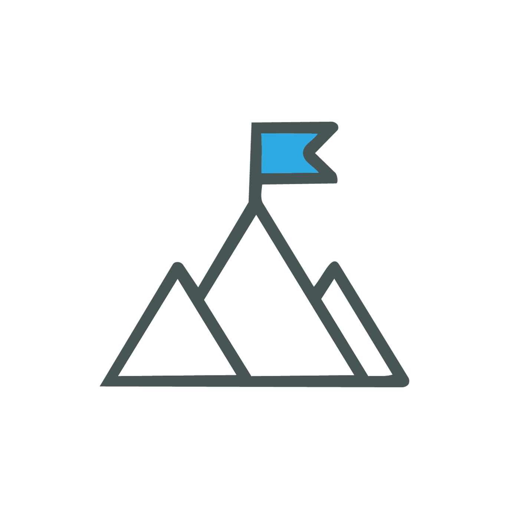
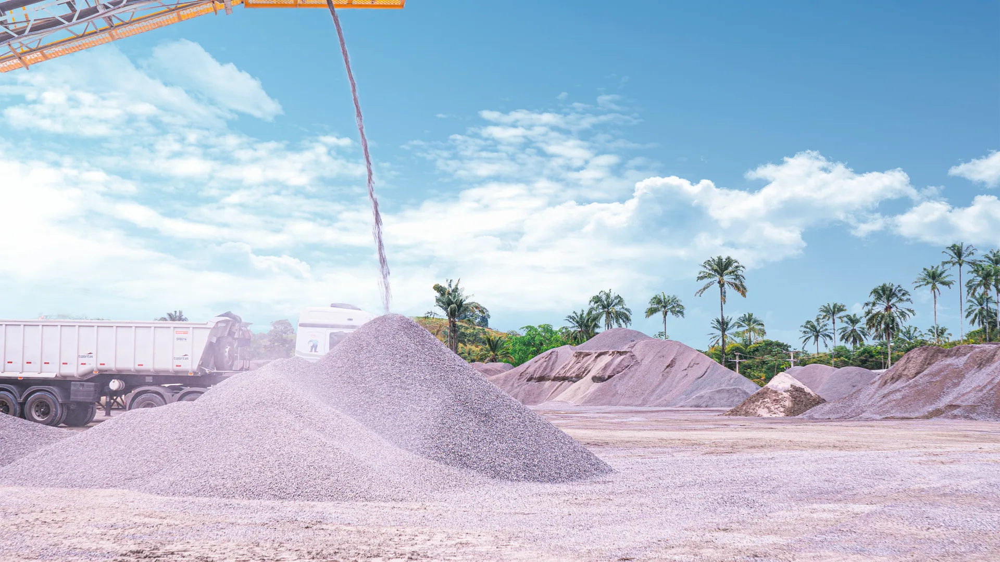
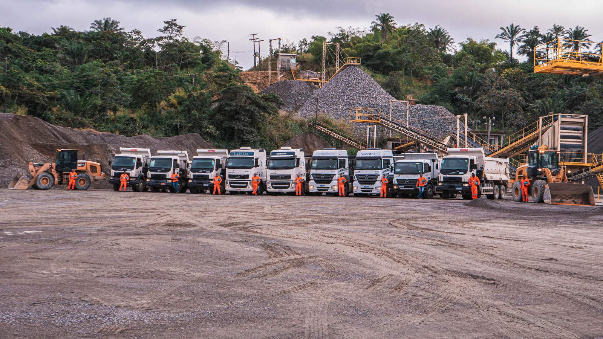
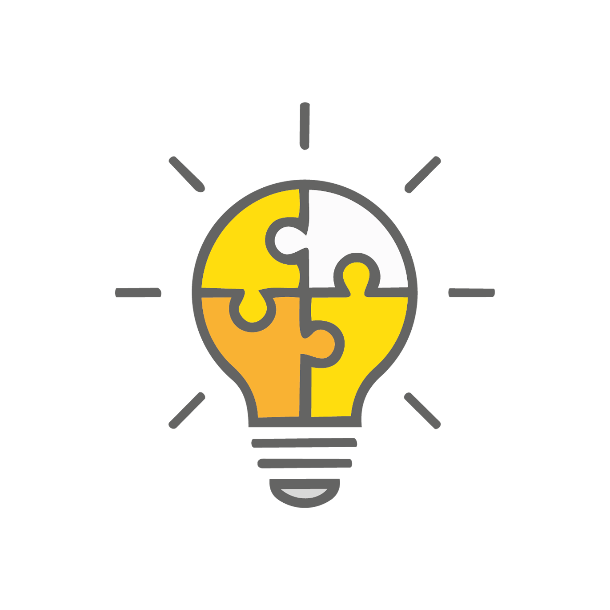
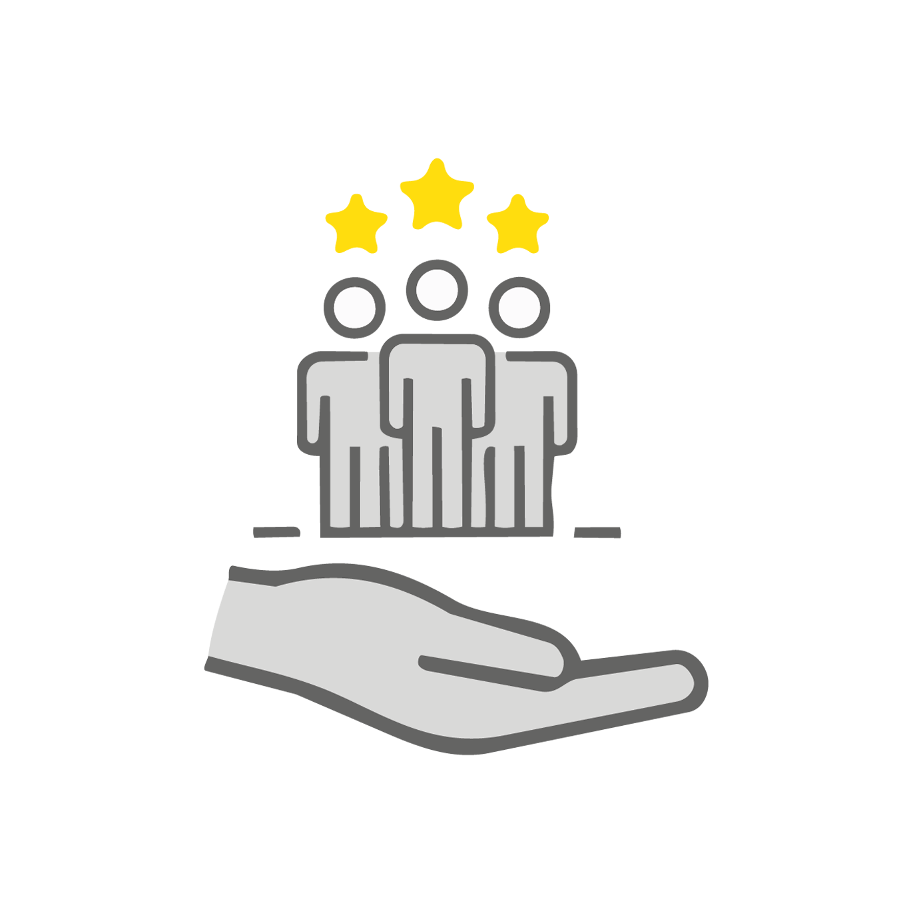
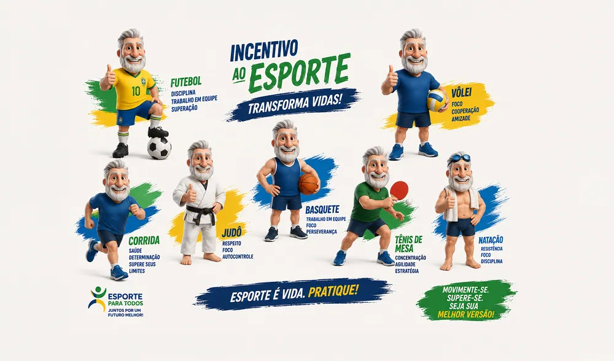
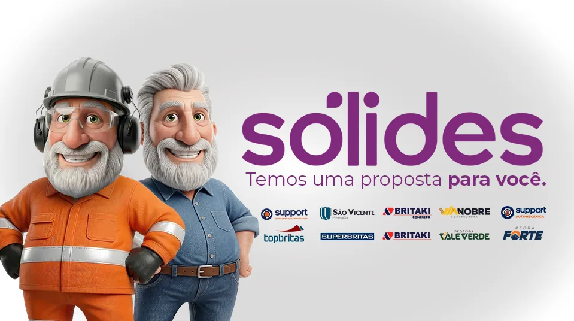
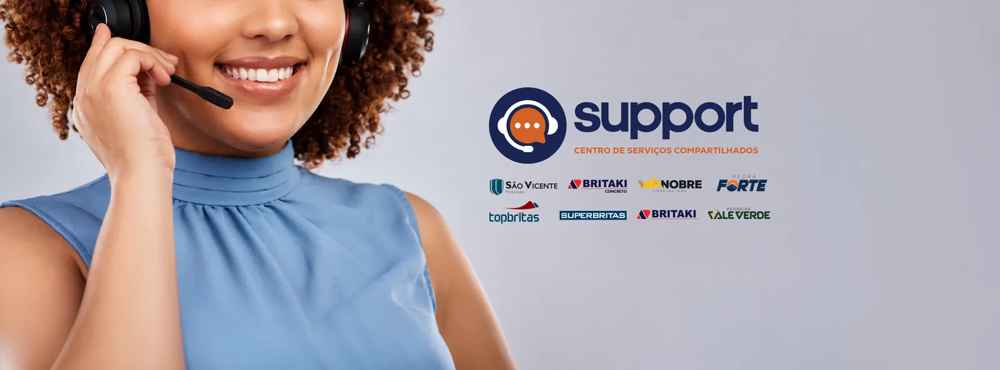

Missão
Contribuir com o desenvolvimento regional de forma sustentável, fornecendo agregados para a construção civil dentro dos mais rigorosos padrões técnicos e de forma ética.

Nossa empresa
Qualidade mineral, técnica de exploração e controle para construir o desenvolvimento regional.
A base da qualidade
A qualidade dos materiais da TopBritas começa em uma jazida de rocha com alta dureza e resistência, somada ao rigor técnico em sua exploração.
O processo de decapeamento retira o solo da parte superior da rocha para manter os materiais britados isentos de argila. Na britagem, equipamentos METSO e o controle de laboratório sustentam o padrão de qualidade.
Conhecer agregados
Dentro da operação
Direção

Contribuir com o desenvolvimento regional de forma sustentável, fornecendo agregados para a construção civil dentro dos mais rigorosos padrões técnicos e de forma ética.

Ser a empresa referência na produção de agregados da região, com elevado padrão de qualidade, compromisso com a sustentabilidade e retorno financeiro.

Ética, paixão, ousadia e excelência: compromissos aplicados às pessoas, ao planeta e a cada etapa da operação.
Além da pedreira
A TopBritas apoia iniciativas que fortalecem a vida e a cultura na região.


